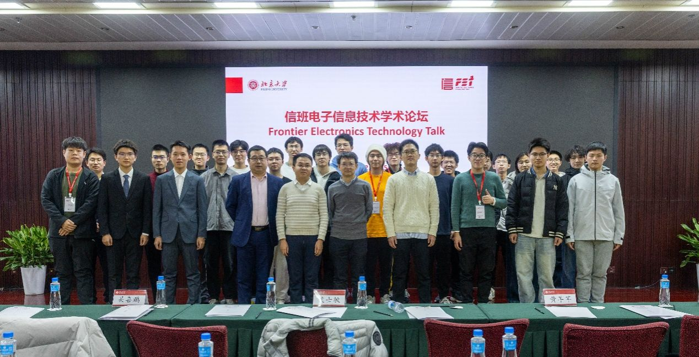

RECENT HIGHLIGHT · 2026
信班本科生在集成电路领域顶会 IEDM 以第一作者发表研究成果
该项工作聚焦先进逻辑技术中背部供电网络的散热挑战，建立涵盖高分辨率三维热表征、热模型重构与热优化的研究框架。
阅读官方报道 ↗从器件、芯片到系统，在基础研究、工程实践与产业需求之间建立真实连接。

该项工作聚焦先进逻辑技术中背部供电网络的散热挑战，建立涵盖高分辨率三维热表征、热模型重构与热优化的研究框架。
阅读官方报道 ↗FIELDS OF INTEREST
器件物理、先进工艺、新型材料与后摩尔技术。
模拟与数字芯片、系统芯片、存算一体与硬件加速。
无线通信、光通信、信息传输与信号处理。
从传感与测量到软硬件协同，解决真实工程问题。
方向说明根据北京大学信息科学技术学院、电子学院与集成电路学院公开资料整理；本页后续可继续加入论文、竞赛、课程项目和科研轮转成果。